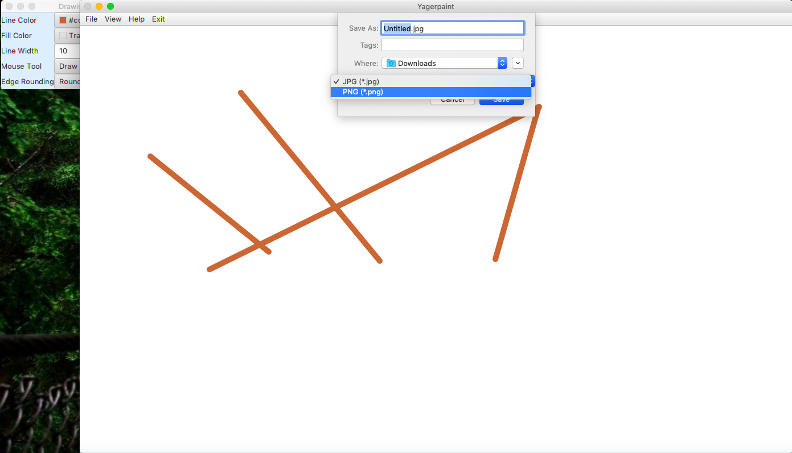
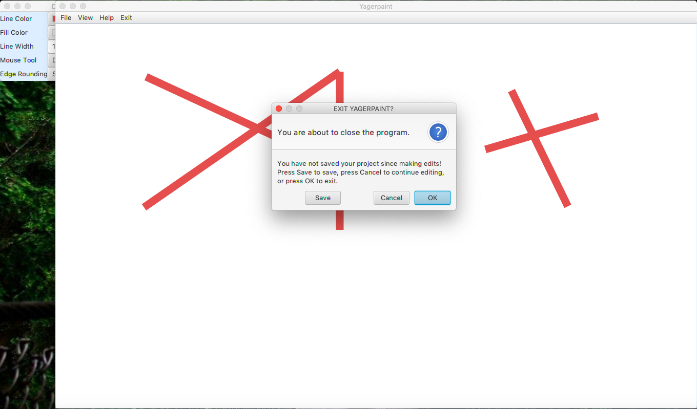
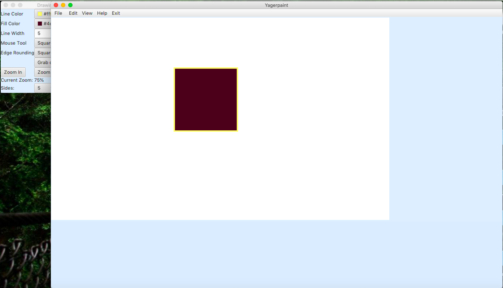
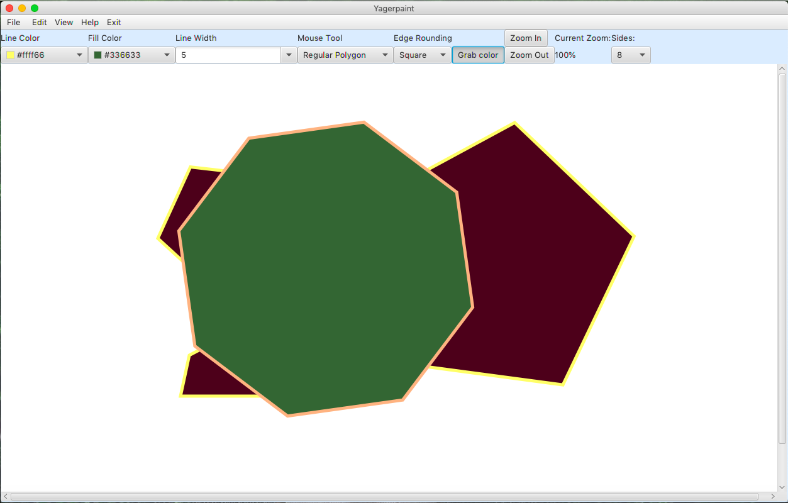
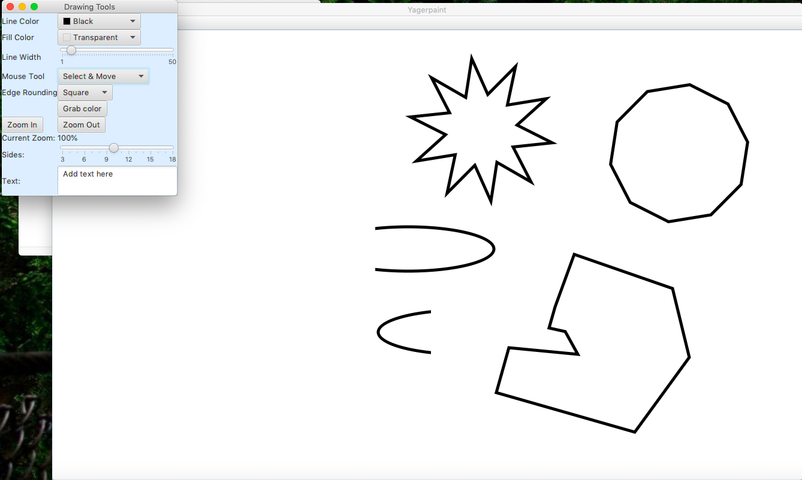
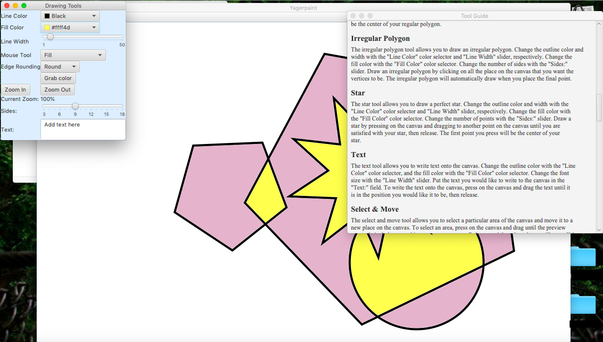
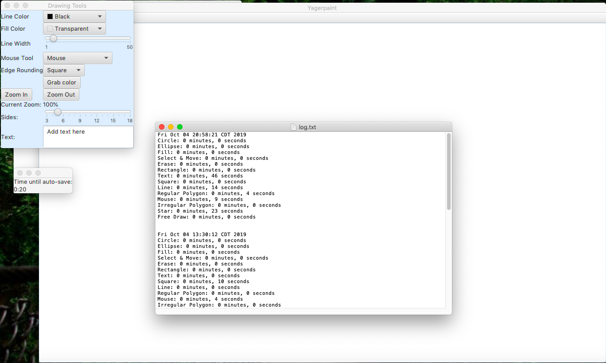
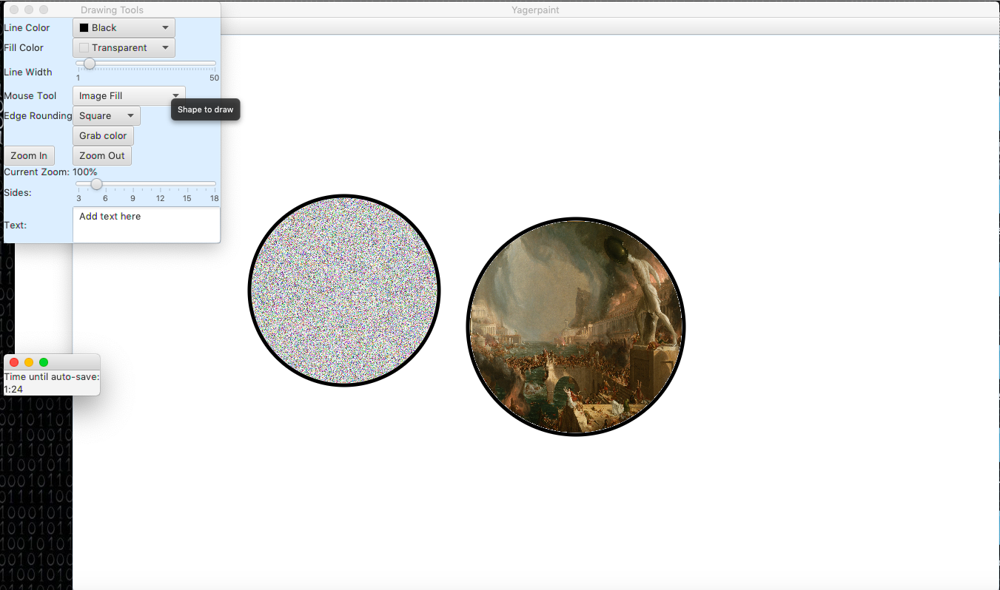

Paint
Nearly everyone is familiar with Microsoft’s classic image editing application, MS Paint. In Fall of 2019, I took the Valparaiso University CS department’s infamous course on object-oriented programming, CS250. The first challenge: implement a production-grade image editing application similar to MS Paint using Java and JavaFX.
I was exceptionally proud of this project when I first finished it, and I still think it’s pretty good. I implemented quite a few features beyond what was required, and the professor complemented my project architecture and documentation, as well. I’m no longer a huge fan of programming in Java, but I learned a lot about object-oriented programming in particular and programming in general. I used version control and unit testing to keep the codebase maintainable. This was my first big experience with agile development principles, as Professor Nick Rosasco organized the project into multiple sprins of complex and regularly updated requirements.
Source Code
The source code for this project is available on GitHub.
Pictures

Images can be saved in PNG or JPG format.

The program will intelligently warn when unsaved changes are about to be lost.

The canvas can be a custom size.

The tools can be in a menu bar above the canvas or in a pop-out window.

The program supports drawing many different shapes, as well as selecting an area of the canvas and moving it to a different part of the canvas.

An in-app knowledge base contains helpful information about the different tools available.

A logger allows users to track the amount of time spent using a particular tool.

In addition to regular area fill, some fun features include random fill and image fill.

Author: Eric Yager
Eric is a computer science & mathematics student and teaching assistant at Valparaiso University. He is also President of Valpo's student chapter of the Association for Computing Machinery (ACM) and Vice President of Valpo's Math Club. He likes to play chess (especially the bughouse variant), program in Go, and tent camp with friends.